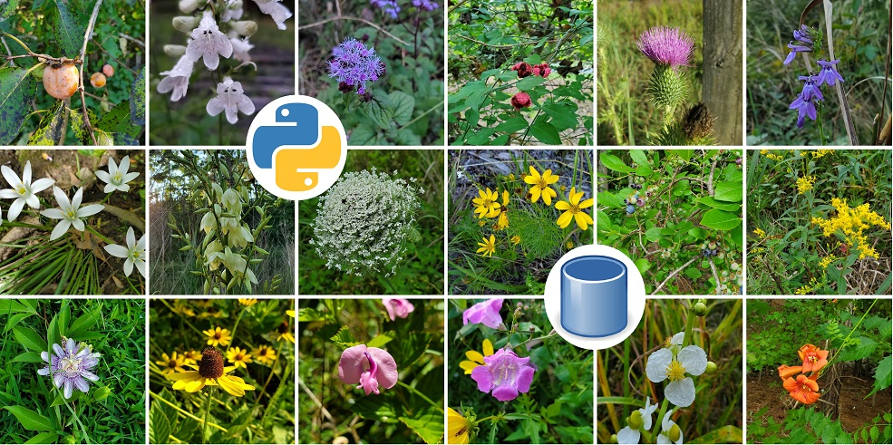
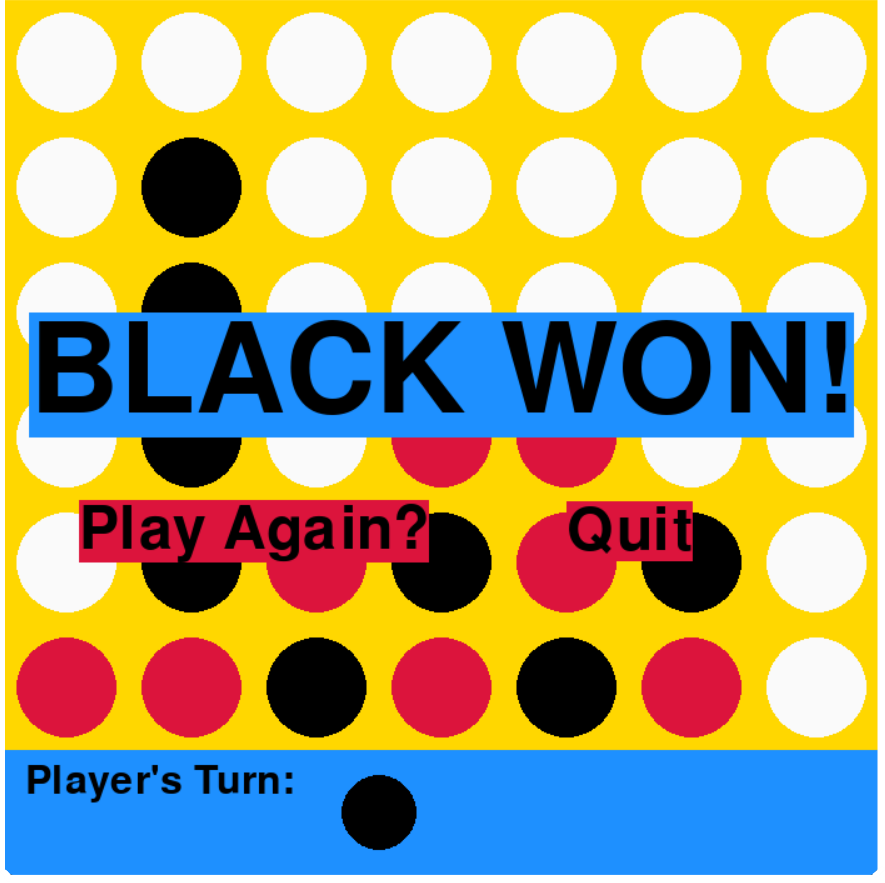
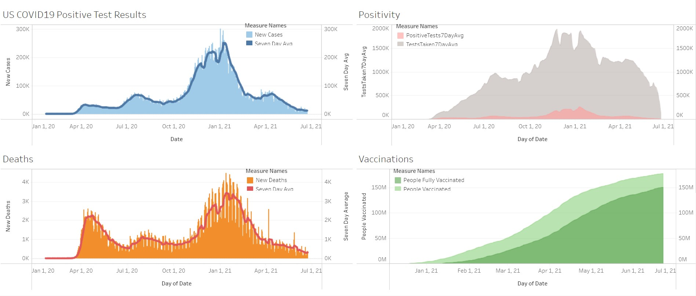
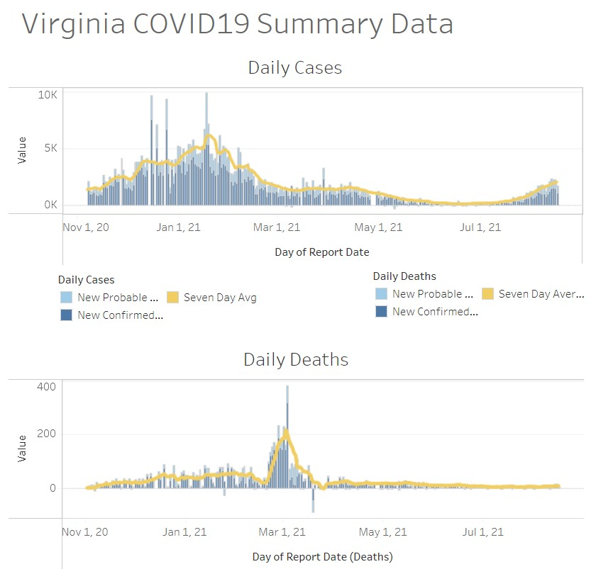

This project started with me wanting to know what the plants around me were called,
and has transformed in to a web scraping project that uses a Jupyter notebook and Python to save information about
native plants to a JSON file for later use.


This was a way for me to explore coding in Python using a highly interactive library called PyGame.

This project takes public data on global covid cases, runs t-SQL queries to gain insights, and finally recreates the
graphs commonly seen on websites/news when talking about covid numbers. Click on the photo to see the accompanying Tableau dashboard.

This project takes publicly available data from the Virginia Department of Health and uses SQL Server to recreate the graphs
on the official VA Covid19 Dashboard. Click on the picture to see my Tableau Public visualization of the data.